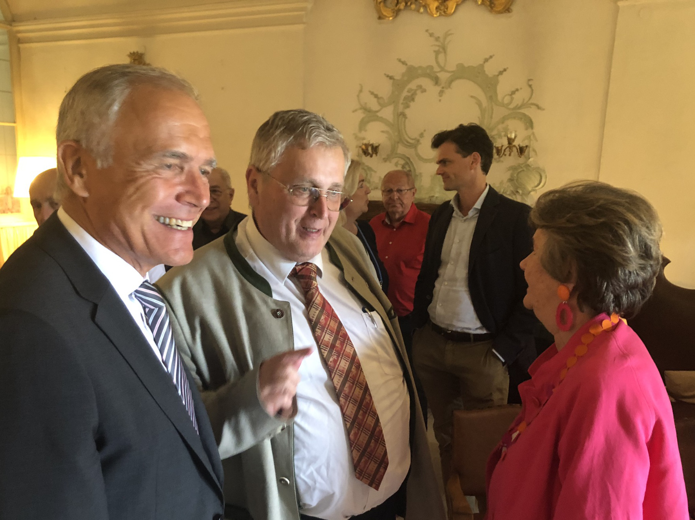

Ö1 Radio
Virtuose, Komponist, Pädagoge
Ein umfassendes Porträt über Joseph Woelfl im Programm von Ö1.
Zum Beitrag →Sitz: Straßwalchen, Salzburg (Österreich)
Geboren in Salzburg, war der Zeitgenosse von Mozart und Beethoven einer der erfolgreichsten Komponisten seiner Zeit. Er war als Komponist und Pianist unter anderem Wegbereiter von Chopin und Liszt. In seiner Wiener Zeit trat er gemeinsam mit Beethoven auf, vollzog aber hauptsächlich eine europaweite Karriere, die auf Empfehlung Mozarts in Warschau begann und ihn über Paris nach London führte, wo er zum damals bestverdienenden Komponisten weltweit avancierte.

Präsident

Vizepräsidentin & Künstl. Leitung

Vizepräsident

Schirmherrschaft

Kassier

Schriftführer

Stv. Schriftführer

Stv. Schriftführer

Öffentlichkeitsarbeit, Vizebürgermeister Straßwalchen

Woelfl Bibliothek

Beirat

Rechnungsprüfer
Pressekonferenz in Leopoldskron (Salzburg) zu Ehren des 250. Geburtstags Joseph Woelfls.
In den Salzburger Nachrichten erschien hierzu ein spannender Artikel:
In Salzburg soll es stärker „woelfln“.

Von links nach rechts: Prof. Dr. Hermann Dechant, Präsident Franz Bachleitner, Prof. Cordelia Höfer-Teutsch, Dr. Helga Rabl-Stadler und Prof. Dr. Margit Haider-Dechant

Präsident Franz Bachleitner im Gespräch mit Dr. Helga Rabl-Stadler
Sehr geehrte Gäste!
Non plus ultra – einfach unübertrefflich – diese selbstbewusste Selbsteinschätzung stellte Joseph Woelfl einem seiner besonders fordernden Werke, einer Klaviersonate voran. Zu Selbstbewusstsein hatte der junge Mann mit Straßwalchner Wurzeln jede Berechtigung. War er doch als Pianist, als Komponist und Musiklehrer gleichermaßen wirkmächtig und ob in Wien, Warschau, Paris oder London eine echte Berühmtheit. Nur bei uns und heute ist er eher ein Geheimtipp für Fachleute, vielleicht auch weil Mozarts Genie alles und alle überstrahlt. Das soll jetzt anders werden. Die Internationale Joseph Woelfl Gesellschaft hat richtig erkannt, dass sie in Straßwalchen mehr Aufmerksamkeit auf sich ziehen kann, als in der Großstadt und hat ihren Sitz von Wien hierher verlegt. Jetzt gilt es die Chance zu ergreifen, unserem Land Salzburg, diesem Leuchtturm im europäischen Musikgeschehen, weitere Strahlkraft hinzuzufügen. Wenn in England angeblich auf jedem Piano Woelfl-Noten liegen, so könnte ein ähnlicher Ruck von Straßwalchen ausgehen. Das Werk Woelfls muss im allgemeinen Musik- und Konzertleben jene Bedeutung zurück erhalten, welche die Kompositionen von Wolfgang Amadeus Mozart und Michael Haydn auszeichnet. Ich bin der festen Überzeugung, dass dies Musikliebhaber und Liebhaberinnen in aller Welt genießen werden.
Aber, was genauso wichtig ist, auch die Bewohner und Bewohnerinnen von Straßwalchen werden einen weiteren Grund bekommen auf ihren schönen geschichtsträchtigen Ort stolz zu sein. Kunst und Kultur geben gerade in unseren so orientierungslosen Zeiten einen sicheren Kompass. Sie verleihen einer Region Identität und Selbstwertgefühl mitten im unüberschaubaren, unberechenbaren Weltgeschehen. Kulinarisch habt ihr ja den Wettstreit mit Mozart schon aufgenommen und bietet mit der Woelfl-Torte der Mozartkugel süße Konkurrenz.


Ein umfassendes Porträt über Joseph Woelfl im Programm von Ö1.
Zum Beitrag →Ein Bericht über den finanziellen und künstlerischen Erfolg Woelfls im Vergleich zu seinen Zeitgenossen.
Zum Artikel →Wie der Ort seinen berühmten Sohn Joseph Woelfl ehrt und was für die Zukunft geplant ist.
Zum Artikel →Internationale Joseph-Woelfl-Gesellschaft
Woelfl-Haus Straßwalchen aka Café Bachmaier
Salzburger Straße 6, 5204 Straßwalchen, Österreich
Email: office@ijwg.at